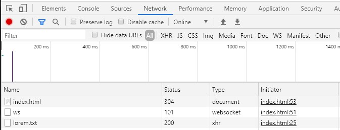

Let's start with basic setup. A button and placeholder for our text
<!DOCTYPE html>
<html lang="en">
<head>
<meta charset="UTF-8">
<meta name="viewport" content="width=device-width, initial-scale=1.0">
<title>Ajax 1 - File input</title>
</head>
<body>
<button id="button">Get Text File</button>
<div id="text"></div>
</body>
</html>
Now let's add event listener to our button to call loadText() function when we click it:
It's time to do our first AJAX call. BTW we will be using plain JavaScript. At the end I will show you how you can do it using jQuery.
Firstly we need define new XMLHttpRequest
//Create XHR Object
let xhr = new XMLHttpRequest();
Let's check what XHR is :
console.log(xhr);
As you can see it's object with a bunch of functions which we will be using to call server in a background:
Now we will use open() function. It accepts 3 parameters:
//OPEN - call type, url/file , sync/async
xhr.open('GET','lorem.txt',true);
This will asynchronously open our file. Of course, we don't have it yet. So let's create a file called lorem.txt in the same directory as our index.html file.
And finally let's send our call:
//SEND
xhr.send()
Let's click our button. As you can see nothing happened in the browser, but when you check Network tab in Developer Tools, you will notice that we have new xhr call visible (make sure to click button first!)
OK but how to use this loaded file? There are many options but for sake of this tutorial we will use easiest one.
When file is loaded it's going through different states:
When you load a lot of data entire process may last some time and you can jump on the loading process on each step. I.e. you can display some loading gif when request is being processed.
If you want to act once file is loaded, you can use onload() function:
xhr.onload = function(){
console.log(this.responseText);
}
Of course we never know whether call will be successful so we should always check a status code:
xhr.onload = function(){
if (this.status == 200){
document.getElementById('text').innerText = this.responseText;
} else {
document.getElementById('text').innerText = "Error";
}
}
We can be as specific as needed:
xhr.onload = function(){
if (this.status == 200){
document.getElementById('text').innerText = this.responseText;
} else if (this.status == 404) {
document.getElementById('text').innerText = "File not found";
} else if (this.status == 403) {
document.getElementById('text').innerText = "Access forbidden";
} else {
document.getElementById('text').innerText = "Unknown error";
}
}
We can also use dedicated functions:
Example - I filled lorem.txt file with 65 000 paragraphs (about 15MB of text) so you could see onprogress function in action:
<script>
document.getElementById('button').addEventListener('click', loadText);
function loadText(){
//Create XHR Object
let xhr = new XMLHttpRequest();
//OPEN - call type, url/file , sync/async
xhr.open('GET','lorem.txt',true);
//SEND
xhr.send()
xhr.onload = function(){
if (this.status == 200){
document.getElementById('text').innerText = this.responseText;
} else if (this.status == 404) {
document.getElementById('text').innerText = "File not found";
} else if (this.status == 403) {
document.getElementById('text').innerText = "Access forbidden";
} else {
document.getElementById('text').innerText = "Unknown error";
}
}
xhr.onerror = function(){
console.log('Loading error');
}
xhr.onprogress = function(){
document.getElementById('text').innerText = "Loading data";
}
}
</script>
Let's load some JSON now.